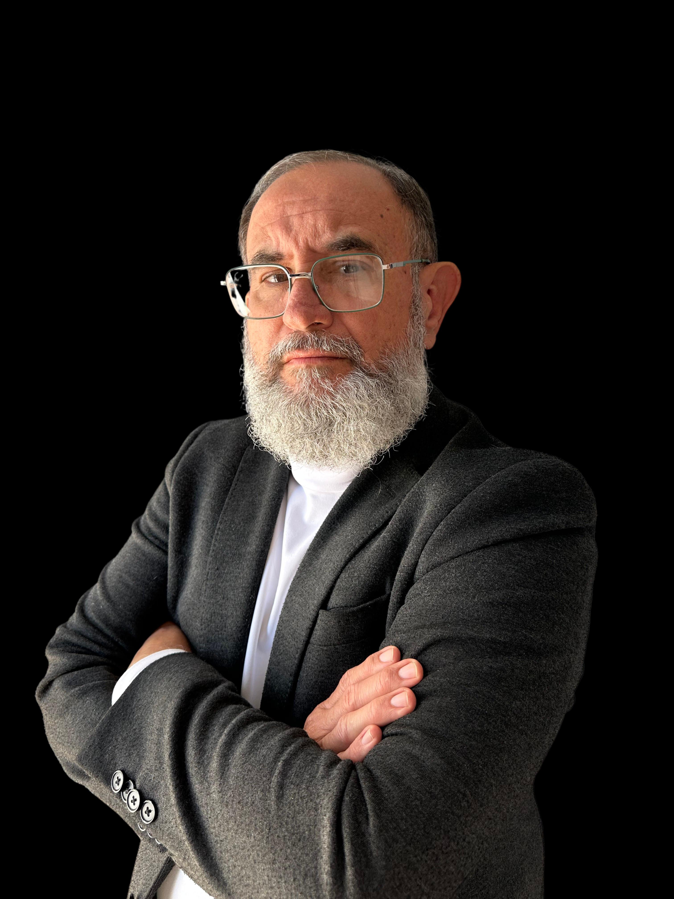
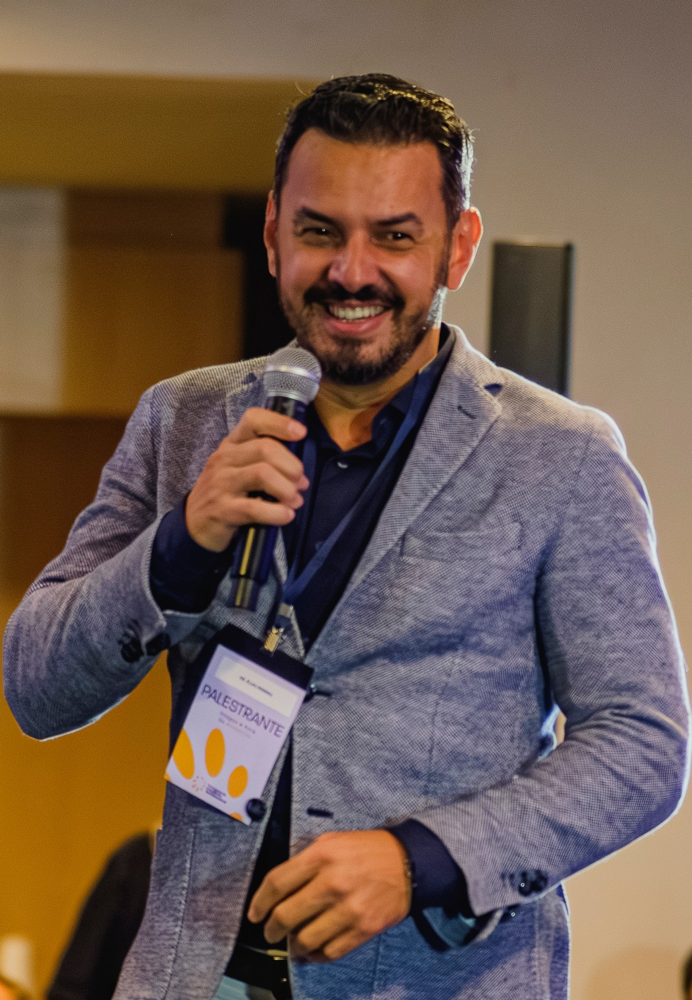
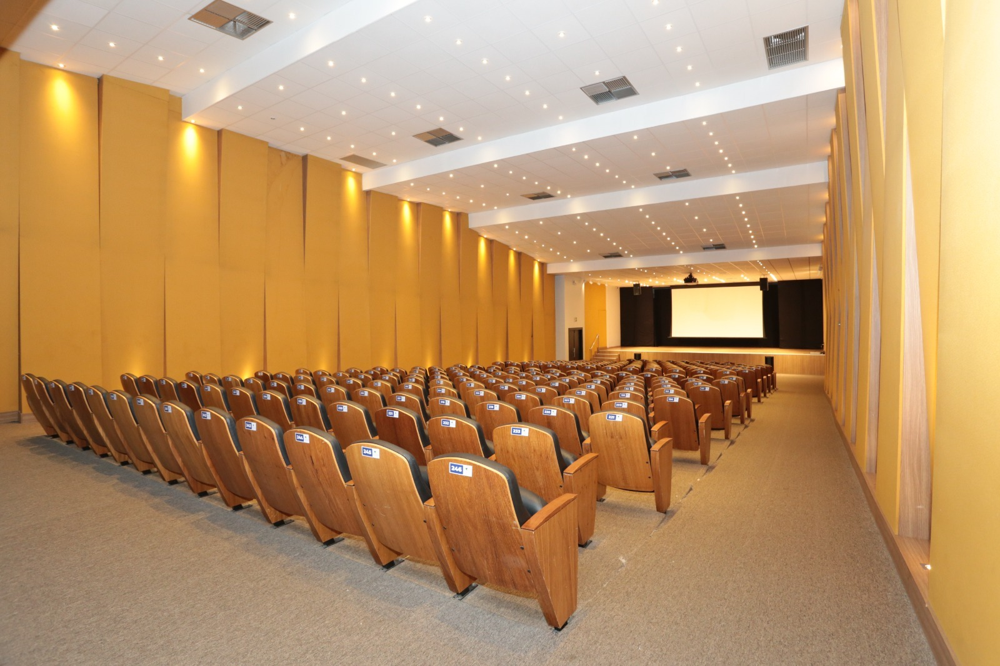
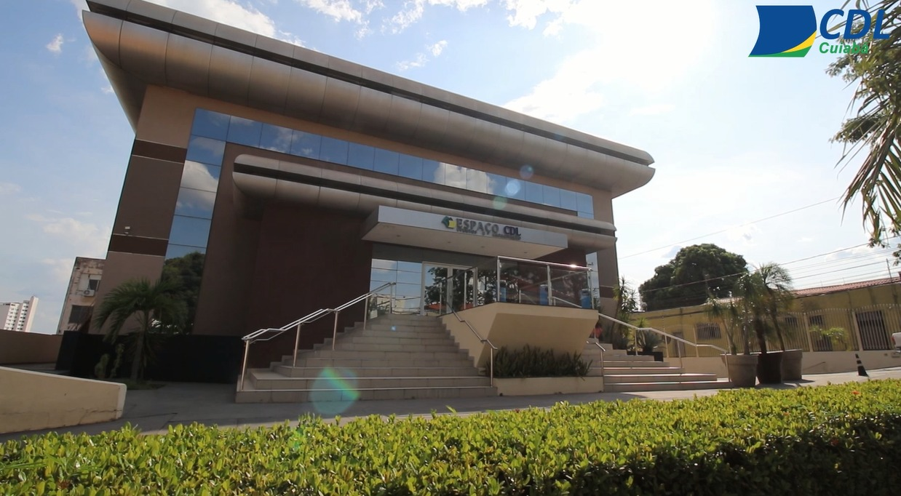
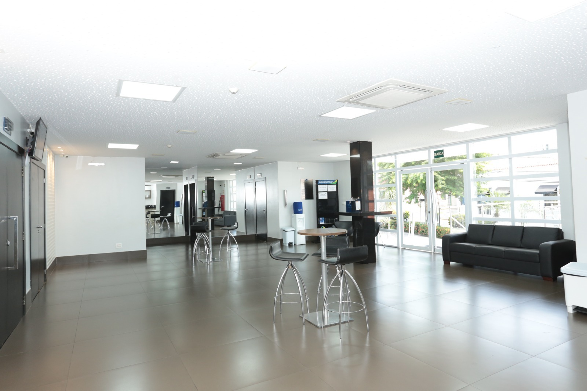
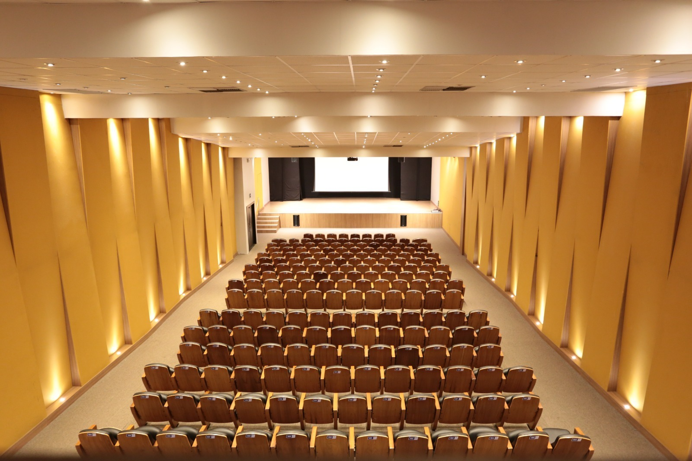

Alex Bill
Palestrante
Reengenharia mental através da epigenética
A 2ª Jornada de Práticas Integrativas de Saúde reúne 15 especialistas em Cuiabá para dois dias de imersão em Saúde Mental, Ciência e o Futuro da Saúde.

Especialistas com atuação comprovada em saúde mental e práticas integrativas — selecionados pela profundidade do conhecimento, não pela popularidade.
Aprofunde sua compreensão sobre saúde mental com base na ciência mais atual — sem achismos e sem receitas prontas.
Conecte-se com profissionais e estudantes da saúde que compartilham do mesmo propósito — dentro do seu próprio estado.
Receba seu certificado digital de participação com carga horária — válido para atualização do histórico profissional e acadêmico.
Saia com perspectivas novas e ferramentas concretas para aplicar na sua vida ou na sua prática clínica já a partir do dia seguinte.
Especialistas com atuação comprovada em saúde mental, práticas integrativas e medicina do futuro. Confira alguns dos nomes confirmados.
Alex Bill
Palestrante
Reengenharia mental através da epigenética

Dr. Alex Alves
Psicólogo, Neurocientista · Especialista em Saúde Mental e Emocional
A interface humano biopsicossocioenergético digital — o fim da infância

Dr. Elias Pereira
Naturopata · Especialista em Oncologia Integrativa
O Cérebro e o Câncer: Como Emoções Influenciam a Imunidade, a Progressão Tumoral e o Futuro da Oncologia Integrativa
Professor Anilson
CEO da BIOWELFARE
O papel da THTC na saúde emocional e alívio da dor
Reginaldo Zaneti
CEO da Reale Energya
Frequência, energia quântica e nanotecnologia inovadora com foco em bem-estar físico, mental e emocional
Dra. Wylzeneth Siqueira
Farmacêutica bioquímica · Mestre em Saúde Coletiva (UFG) · Práticas Integrativas em Saúde
Do acolhimento ao plano terapêutico: raciocínio clínico integrativo na experiência do Projeto VIDA com servidores públicos de Primavera do Leste – MT

Dra. Izabella Girotto
Terapeuta em Desenvolvimento Humano · Fundadora da Alínea Desenvolvimento
O Eneagrama no processo do autoconhecimento

Dra. Ana Paula Ferro
Diretora de Comunicação Sinter-MT · Terapeuta Sistêmica · Terapeuta Florais de Bach
Acolhimento da Criança Interior: Caminhos para a Saúde Mental e o Bem-Estar Integral

Dra. Adriana Bertocco
Médica de Família · Anestesiologista · Especialista em Acupuntura e Saúde Integrativa · Médica Funcional Integrativa · Endocrinologista
Médica CRM/SP 160.993 | CRM/DF 33.624
Saúde mental no prognóstico de câncer de mama

Rafael Navarrete
Naturopata · Homeopata · Parapsicólogo Clínico · Hipnólogo Clínico · Terapeuta Relacional
Sistema Nervoso Entérico e Saúde Mental: Evidências e Aplicações Clínicas

Isolda Risso
Terapeuta Criativa · Coach · Pesquisadora do Comportamento Humano · Especialista em Arteterapia · Autora do livro "Mulheres cá pra nós!"
A Arte como linguagem da Alma

Dra. Verônica Meirelles
Psicóloga · Especialista em Neuropsicologia e TCC · Proprietária e Responsável Técnica da Clínica Habilitar · Professora Universitária
O que é, afinal, saúde mental?

Prof. Claudinei Rodrigues
Técnico em Saneamento e Química · Graduando em Engenharia Ambiental e Sanitária · Empresário, criador da Garrafa Acqua e CEO da Acqua Purificadores
Téc. Saneamento 46326/126808485CM · Téc. Química 87028/126808113CM
Metais Tóxicos na Água e seus Impactos Neurológicos

Dr. Marcos Salgado
Professor de Anatomia e Neuroanatomia · Especialista em Medicina Tradicional Chinesa · Coordenador do Ambulatório de Dor (SUS) – Franco da Rocha, SP
Acupuntura dos 6 Elementos e sua eficácia no tratamento psicoemocional
Dr. Marcio José
Medicina metabólica · Especialista em Biofísica · Medicina regenerativa · Medicina esportiva · Médico legista e farmacêutico
Médico CRM 7189 MT
Deficiências Hormonais × Depressão: Quando o Desequilíbrio Hormonal Pode Afetar a Saúde Mental
+ outros especialistas confirmados em breve.
Trabalha com saúde há anos — mas sente que o modelo atual não dá conta da complexidade do ser humano.
Quer integrar práticas complementares à sua atuação, mas não sabe por onde começar com embasamento científico.
Percebe que a saúde mental dos seus pacientes — ou da sua própria vida — está pedindo socorro, enquanto o sistema continua olhando só para os sintomas.
Sente que a atualização profissional está ficando para trás enquanto a ciência integrativa avança em velocidade acelerada.
Quer se conectar com outros profissionais que pensam de forma ampliada — e não encontra esse espaço em Mato Grosso.
Se você disse sim para qualquer uma dessas situações, este evento foi construído para você.
A 2ª Jornada de Práticas Integrativas de Saúde em Mato Grosso — 4ª edição das CEPICs — é o maior encontro do estado dedicado a conectar ciência e saúde integrativa.
Dois dias completos de palestras, trocas e conhecimento aplicado, com foco no tema mais urgente da saúde contemporânea: Saúde Mental, Ciência e o Futuro da Saúde.
Não é um evento comum de saúde. É uma imersão que une o rigor científico com a profundidade das práticas integrativas — para profissionais, estudantes e qualquer pessoa que acredita que saúde é muito mais do que ausência de doença.

Você é profissional de saúde (terapeuta, médico, psicólogo, fisioterapeuta, nutricionista, enfermeiro, educador físico) e quer atualizar sua prática com embasamento científico em saúde integrativa.
Você é estudante da área da saúde e quer sair na frente com uma visão ampliada do cuidado humano antes de se formar.
Você não é da área da saúde, mas acredita que saúde mental é prioridade — e quer entender, com base na ciência, quais caminhos já estão disponíveis.
Você quer se conectar com uma rede de profissionais que pensam diferente, dentro de Mato Grosso.
Grade sujeita a pequenos ajustes — confirmações finais de palestrantes em andamento.
Todos os palestrantes apresentam práticas com evidência científica. Nenhum modismo sem embasamento entra no palco.
Cada especialista foi selecionado pela profundidade do conteúdo e pela experiência clínica real — não pela popularidade nas redes.
Dois dias no mesmo espaço com pessoas que compartilham do mesmo propósito. As conexões nos intervalos valem tanto quanto as palestras.
Reconhecimento formal da sua atualização — 16h válidas para histórico acadêmico e profissional.
Um evento de nível nacional acontecendo aqui — para quem está aqui. Sem precisar viajar para São Paulo ou Brasília para acessar o melhor da saúde integrativa brasileira.
Mais de 220 participantes em média por edição já passaram pela Jornada. A próxima história pode ser a sua.

Rua Cândido Mariano, 775 — Cuiabá, Mato Grosso
Espaço amplo, climatizado e estruturado para receber um evento de referência em saúde integrativa.


Selecionamos as melhores opções para quem vem de fora. Os hotéis com o selo Tarifa Especial Sinter-MT têm condições negociadas diretamente pela organização do evento.
Máxima Proximidade
Ideal para ir a pé ao evento
Mato Grosso Palace Hotel
★★★
Tarifa Net Especial — Quarto Executivo
1 pessoa: R$ 260 · 2 pessoas: R$ 320 · 3 pessoas: R$ 419
Hotel Mato Grosso Inn
★★
Tarifa Net Especial — Quarto Executivo
1 pessoa: R$ 209 · 2 pessoas: R$ 259
Getúlio Hotel
★★★
Condições dos hotéis com Tarifa Especial Sinter-MT (Palace & Inn)
Melhor Custo-Benefício
Boa relação qualidade-preço, próximos ao evento
Hotel D'Luca
★★★+
Tarifa Congressistas
SGL: R$ 310 · DPL: R$ 380 · TPL: R$ 450
1 criança até 6 anos não paga
Hotel Amazon Getúlio
★★★★
Hotel ibis Cuiabá Shopping
★★★
Conforto Premium
Para quem quer a melhor experiência de estadia
Hotel Deville Prime Cuiabá
★★★★★
Hotel Intercity Cuiabá
★★★★
Primeiro lote · vagas limitadas à capacidade do espaço. Garanta o seu pelo menor valor.
Cartão de crédito · Boleto · Pix
Cartão de crédito · Boleto · Pix
Cartão de crédito · Boleto · Pix
Nos dias 12 e 13 de setembro, Cuiabá vai sediar a conversa mais importante da saúde contemporânea em Mato Grosso. 15 especialistas. Dois dias. Uma experiência que vai mudar a forma como você pensa, cuida e vive a saúde.
A pergunta que fica é simples: você vai estar lá?
Sim! Quero garantir minha vaga!⚡ Vagas limitadas à capacidade do espaço · Certificado de 16h incluso
Diamond

Gold

Silver

Bronze